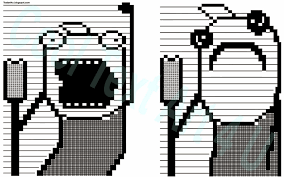
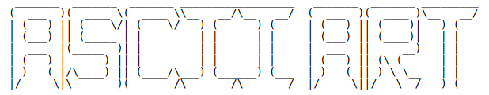

1 / 3

2 / 3

3 / 3

ASCII art is a graphic design technique that uses computers for presentation and consists of pictures pieced together from the 95 printable (from a total of 128) characters defined by the ASCII Standard from 1963 and ASCII compliant character sets with proprietary extended characters (beyond the 128 characters of standard 7-bit ASCII). The term is also loosely used to refer to text based visual art in general. ASCII art can be created with any text editor, and is often used with free-form languages. Most examples of ASCII art require a fixed-width font (non-proportional fonts, as on a traditional typewriter) such as Courier for presentation.
The simplest forms of ASCII art are combinations of two or three characters for expressing emotion in text. They are commonly referred to as 'emoticon', 'smilie', or 'smiley'. There is another type of one-line ASCII art that does not require the mental rotation of pictures, which is widely known in Japan as kaomoji (literally "face characters".) Traditionally, they are referred to as "ASCII face". More complex examples use several lines of text to draw large symbols or more complex figures.